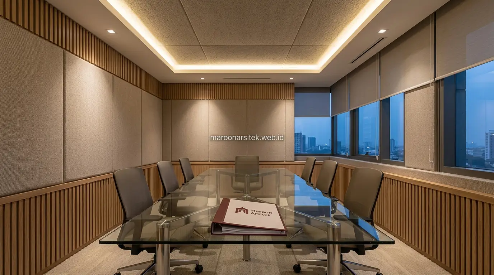

Jasa renovasi bangunan komersial mengubah identitas visual, kenyamanan akustik, dan tata ruang penyimpanan ruko lama agar sesuai dengan kebutuhan operasional kantor modern, melampaui sekadar perubahan tampilan permukaan semata. Maroon Arsitek menangani transformasi menyeluruh ini dengan mempertimbangkan aspek fungsional yang sering terlewat dalam proses redesign bangunan komersial di kawasan perkantoran Jakarta dan sekitarnya.
Perubahan fungsi dari ruko menjadi kantor tidak hanya soal estetika, tetapi juga menyangkut kenyamanan kerja sehari-hari yang dipengaruhi faktor seperti akustik ruang dan efisiensi penyimpanan dokumen. Bersama tim kontraktor bangunan komersial berpengalaman, bagian berikut menguraikan tiga aspek transformasi yang sering luput dari perhatian namun krusial bagi kenyamanan operasional kantor.
Transformasi Identitas Visual dari Ruko menjadi Kantor Profesional
Transformasi identitas visual mencakup perubahan elemen branding, seperti logo pada fasad, skema warna korporat, dan signage yang mencerminkan citra profesional kantor, berbeda dari identitas visual ruko yang umumnya berorientasi pada promosi produk secara langsung. Perubahan ini menjadi langkah awal membangun kesan profesional bagi tamu maupun klien yang berkunjung.
Elemen branding korporat diterapkan secara konsisten pada berbagai titik, mulai dari fasad luar hingga area resepsionis di dalam kantor, menciptakan pengalaman visual yang seragam sejak pengunjung tiba di lokasi hingga memasuki ruang kerja utama dengan dukungan rancangan desain bangunan komersial produktif.
Pemilihan material dan warna pada identitas visual turut disesuaikan dengan citra industri yang digeluti perusahaan, memastikan kesan yang ditampilkan sesuai dengan positioning bisnis yang ingin dikomunikasikan kepada klien maupun mitra kerja, sebagaimana tampak pada berbagai proyek di galeri portofolio Maroon Arsitek.
Konsistensi Elemen Branding dari Fasad hingga Area Dalam
Kebutuhan kesan profesional yang menyeluruh dijawab melalui konsistensi elemen branding pada setiap titik yang dilalui pengunjung, mulai dari signage fasad, area resepsionis, hingga ruang rapat yang sering digunakan untuk pertemuan dengan pihak eksternal.
Konsistensi ini memperkuat citra profesional perusahaan, memastikan pengunjung mendapat kesan yang seragam dan meyakinkan sepanjang perjalanan mereka di dalam kantor, bukan hanya pada area yang terlihat dari luar bangunan melalui sentuhan renovasi fasad modern.
Pengelolaan Akustik Ruang untuk Kenyamanan Kerja Tim
Pengelolaan akustik menjadi pertimbangan penting dalam transformasi ruko menjadi kantor, karena ruko umumnya tidak dirancang dengan perhatian khusus terhadap peredaman suara, sementara kantor modern membutuhkan tingkat kenyamanan akustik yang mendukung konsentrasi kerja tim. Aspek ini sering terlewat dibanding perubahan visual yang lebih terlihat.
Material peredam suara diaplikasikan pada area dengan kebutuhan konsentrasi tinggi, seperti ruang kerja individu atau ruang rapat, mengurangi gangguan suara dari aktivitas di area lain dalam satu bangunan kantor yang sama saat ditangani oleh kontraktor renovasi profesional.
Penataan tata ruang turut mempertimbangkan pemisahan area bising, seperti area diskusi atau pantry, dari area kerja yang membutuhkan ketenangan, sehingga kenyamanan akustik tercipta melalui kombinasi material dan perencanaan tata ruang yang tepat dengan paduan pencahayaan interior modern.

Pemisahan Zona Bising dari Area yang Membutuhkan Ketenangan
Kebutuhan kenyamanan kerja dijawab melalui pemisahan zona berdasarkan tingkat kebisingan yang dihasilkan aktivitas di dalamnya, menempatkan area seperti pantry atau ruang diskusi pada jarak yang tidak mengganggu area kerja yang membutuhkan fokus.
Pemisahan ini mengurangi kebutuhan material peredam suara secara berlebihan, karena penataan tata ruang yang tepat sejak awal sudah membantu meminimalkan gangguan akustik antar area fungsi yang berbeda dalam kantor tanpa membuat anggaran renovasi overbudget.
Penyesuaian Area Penyimpanan dan Sirkulasi Dokumen Kantor
Area penyimpanan dan sirkulasi dokumen memerlukan penyesuaian khusus saat ruko diubah menjadi kantor, karena kebutuhan penyimpanan arsip dan alur distribusi dokumen berbeda signifikan dari kebutuhan penyimpanan barang dagangan pada fungsi ruko sebelumnya. Penyesuaian ini penting untuk mendukung efisiensi kerja administratif sehari-hari.
Perancangan area penyimpanan mempertimbangkan volume dokumen yang perlu diarsipkan, baik dalam bentuk fisik maupun kebutuhan ruang untuk peralatan pendukung seperti mesin fotokopi dan pemindai dokumen yang umum digunakan dalam operasional kantor dengan mengadopsi solusi furniture interior custom.
Alur sirkulasi dokumen turut diperhatikan, memastikan perpindahan dokumen antar bagian kerja berjalan efisien tanpa mengganggu aktivitas kerja tim yang berada di sepanjang jalur sirkulasi tersebut.
Perencanaan Kapasitas Penyimpanan Arsip Fisik dan Digital
Kebutuhan pengelolaan dokumen yang efisien dijawab melalui perencanaan kapasitas penyimpanan yang mempertimbangkan kombinasi arsip fisik dan kebutuhan infrastruktur untuk penyimpanan digital, sesuai kebiasaan kerja tim yang akan menempati kantor tersebut.
Perencanaan ini membantu memastikan area penyimpanan tidak menjadi kendala operasional di kemudian hari, terutama seiring bertambahnya volume dokumen yang perlu dikelola sepanjang masa operasional kantor berjalan. Seluruh perancangan ini dapat diintegrasikan ke dalam perhitungan RAB renovasi bangunan terperinci sejak awal proyek.